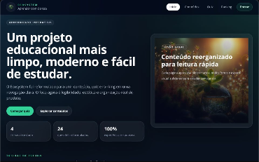

Formação
Ensino médio técnico em Tecnologia da Informação concluído, com base em desenvolvimento e lógica de programação. Atualmente cursando Ciência da Computação, aprofundando conhecimentos teóricos e práticos na área.
Transformo problemas complexos em soluções elegantes. Focado em criar aplicações web performáticas, escaláveis e com uma experiência de usuário excepcional.

Sou estudante de Ciência da Computação com formação técnica em TI, o que me deu uma base prática desde cedo em desenvolvimento e lógica de programação. Tenho interesse em back-end e gosto de entender como os sistemas funcionam por trás das aplicações. Busco evoluir constantemente, aprendendo na prática e resolvendo problemas de forma criativa com os recursos que tenho. Vejo a programação como uma ferramenta para construir soluções úteis e estou focado em desenvolver habilidades sólidas para crescer na área.
Ensino médio técnico em Tecnologia da Informação concluído, com base em desenvolvimento e lógica de programação. Atualmente cursando Ciência da Computação, aprofundando conhecimentos teóricos e práticos na área.
Experiência prática no desenvolvimento de projetos completos durante o ensino técnico, envolvendo desde a interface até a lógica da aplicação. Foco em resolver problemas reais, integrar funcionalidades e evoluir continuamente na construção de sistemas.
Tenho uma abordagem analítica e curiosa, buscando entender problemas em profundidade e transformá-los em soluções lógicas, organizadas e sustentáveis.
Tecnologias e ferramentas que domino para construir produtos digitais de ponta a ponta.
Uma seleção do meu trabalho mais recente, unindo estética, funcionalidade e código limpo para resolver problemas reais.

protótipo de dessalinizador de água salobra movido a energia solar, utilizando osmose reversa e automação com Arduino. O sistema conta com bombas de alta pressão, membranas semipermeáveis e sensores que monitoram pressão, fluxo e qualidade da água. A energia é fornecida por painéis solares, tornando o sistema autônomo e sustentável. O protótipo mostrou-se viável para uso em regiões com escassez de água e infraestrutura limitada.


Plataforma educacional interativa voltada ao estudo de ecologia, que une conteúdo teórico aprofundado, quizzes com feedback imediato e sistema de ranking baseado em desempenho. O projeto utiliza React + Vite no frontend e Supabase no backend, incluindo autenticação, banco de dados e armazenamento de resultados em tempo real. O foco foi criar uma experiência de aprendizado clara, moderna e orientada à evolução do usuário.
Um resumo da minha jornada acadêmica no mundo do desenvolvimento.
Durante o ensino médio técnico em TI, tive contato com diferentes áreas da tecnologia, incluindo desenvolvimento web com HTML e React, banco de dados, fundamentos de redes, desenvolvimento de jogos e design para websites. Essa formação me proporcionou uma base prática diversificada, permitindo entender melhor como diferentes áreas se conectam na construção de sistemas e aplicações.
Atualmente curso Ciência da Computação, onde venho aprofundando meus conhecimentos em lógica, algoritmos e fundamentos da computação. A graduação complementa minha base prática, permitindo entender melhor como os sistemas funcionam e como construir soluções mais estruturadas.
Estou sempre aberto a novas oportunidades e boas conversas sobre tecnologia.
São Paulo, SP - Brasil
Disponível para trabalho remoto e presencial dependendo da oportunidade.